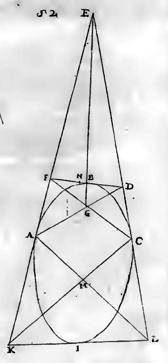

Propositio XIII · Problema II¶



PROP. XIII. PROBL. II. (tab. 6. fig. 51. & 52., p. 49; in marg. 1. 3. conic., 14. 6. Euc.)
Hyperbolam, ellipsim, & circulum quaedam linea contingat, & per contactum ducta sectionis diametro, hanc vna cum tangente tangens alia secet, & sit data partium ratio postremae tangentis: oportet alteram manifestare, quae fit ex portionibus ductae diametri.
Esto C centrum conisectionis AB, quam contingat linea AD in A, & iuncta CA producatur extra sectionem, vt simul cum tangente AD secetur ab alia contingente ducta ex B, hoc est CA producta in E, & AD in D: Dico quod si manifesta fuerit ratio BD ad DE, etiam CA ad AE manifesta erit. Iungatur CB, quae producta occurrat rectae AD in puncto F. Itaque constructa erit figura elementi primi, cuius centrum D, & vertex C; & quia, ex conicis, triangulum EDA aequale est triangulo BDF, erit DB ad DE, vt DA ad DF; est autem data ratio BD ad DE; ergo & ipsa AD ad DF dabitur; datis verò duabus rationibus DB ad DE, & AD ad DF, manifestabimus quoque duas reliquas, & propterea dabitur CA ad AE, quod &c.